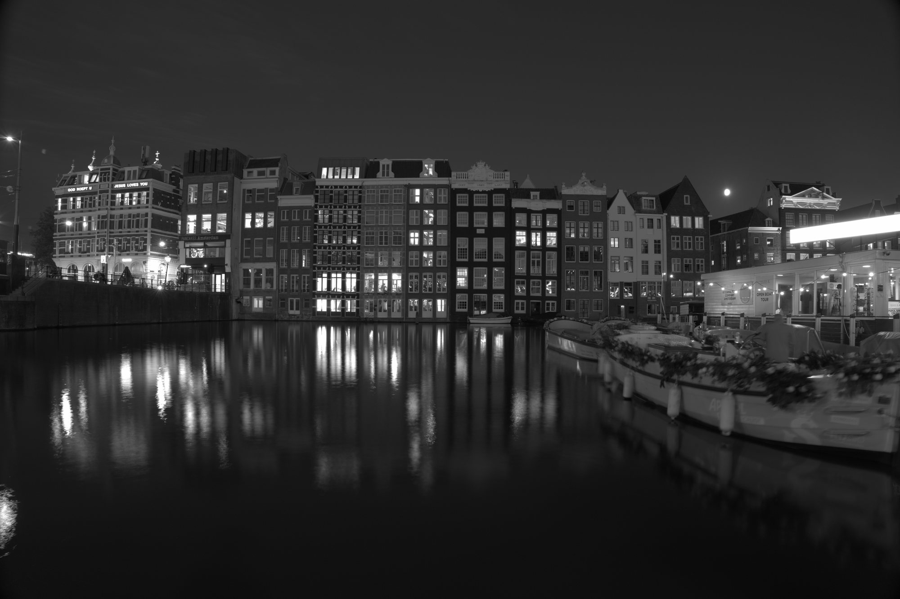
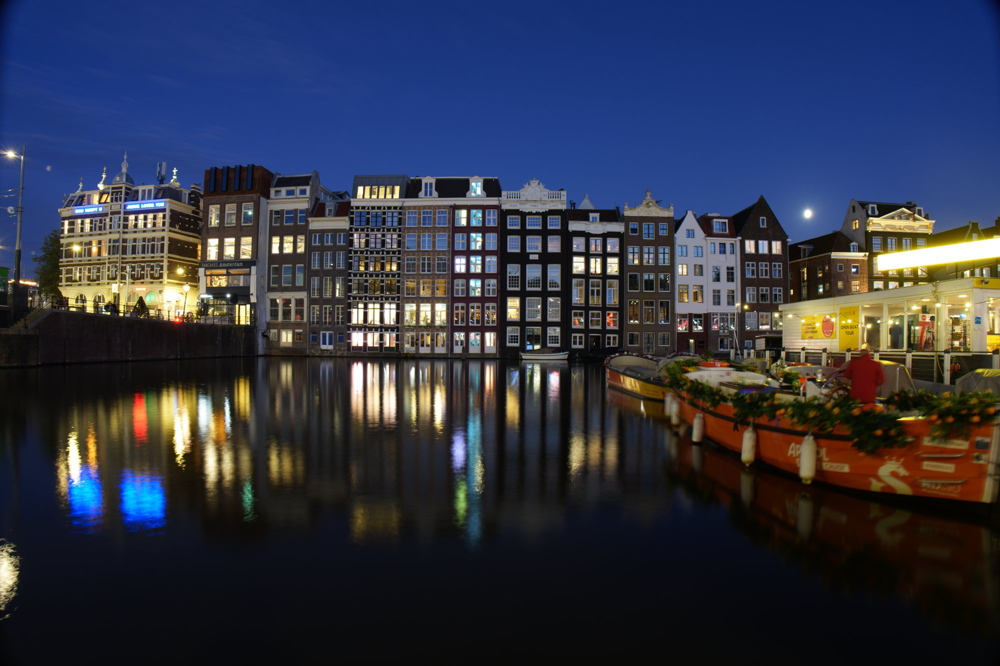

从运河边的光，到 RAW 文件里的一串数字。
太阳落下二十分钟，天空还剩一点蓝，运河边的窗户已经亮起来。
20 mm，f/8，ISO 100。光线太暗，要靠长曝光把它攒够。
快门打开 13 秒。这 13 秒里落进镜头的每一个光子，都会被记下来。
镜头把场景投射到相机深处的一块芯片上。
约 3270 万个。每一个只有几微米宽，只做一件事：数光。
最上面是微透镜，把光聚进去；下面是滤色片，按 2×2 排列：一红、两绿、一蓝。
落进来的光越多，感光点里攒下的电荷越多。柱子的高度是这张照片里 8 × 8 个感光点的真实读数。
一整行同时读出，模数转换器把电荷量化成 0 – 16383 的 14 位整数。读完的感光点清零，等下一张。
一张表，只有数字。黑暗处的读数约是 512，那是黑电平：没有光，读数也不为 0。
是一张马赛克。每个点只有一个通道的亮度，颜色还不存在。
直接显示，只有灰度：没有颜色，亮暗也不对，还不像一张照片。
去马赛克、白平衡、色彩矩阵、色调曲线……相机的"创意外观"就在这一段。
下一段旅程：sony-a7m5-looks